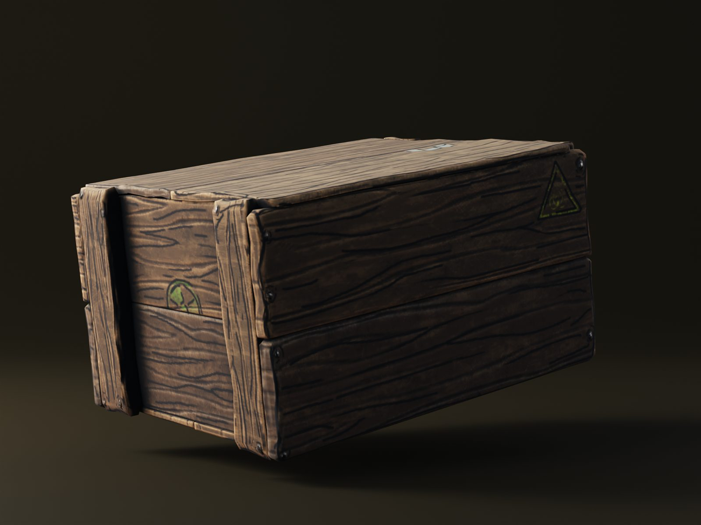
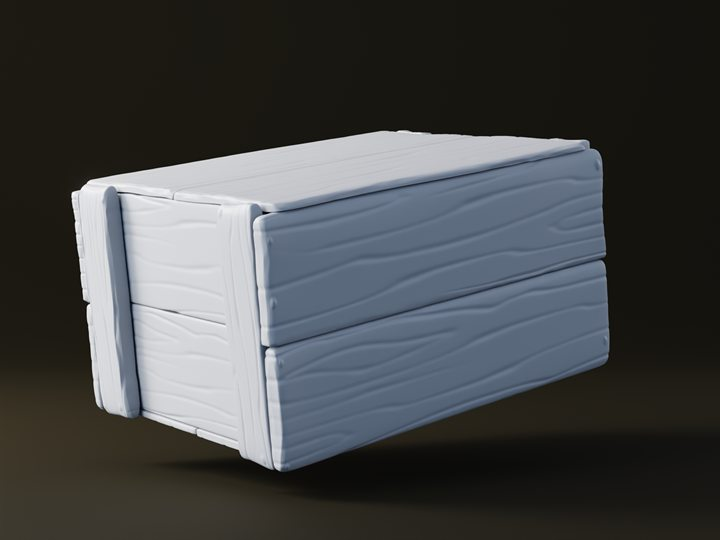

Small Wooden Storage Box
A small storage prop for the player's base: how much material identity a simple crate can carry through shape, edge treatment, and controlled wood detail.

Storage is one of those things every survival base needs, so a crate was an obvious next asset. It's also a good test of the style: a box has almost no interesting silhouette, so everything rests on proportions, edges, and the material itself.
- Type
- Base prop / storage
- Tools
- Blender, ZBrush, Substance Painter, Marmoset Toolbag
- Focus
- Stylized wood, edge treatment, readability
Breakdown



Making a box interesting
The answer was mostly in the construction. Instead of one block with planks painted on, each board and brace is its own piece, so the wireframe already reads as something nailed together. The sculpt pass softens and chips the edges so the box feels used rather than freshly built.
Texturing reuses the rules set by the pickaxe: grain that follows each board, warm hand-painted values, and drawn lines for the grain and seams. Small stamped markings on the sides add a bit of story without adding noise.
Next up
With tools and props working in the style, the next focus is the modular building set, starting with the twig foundation pieces players will build their first base on.